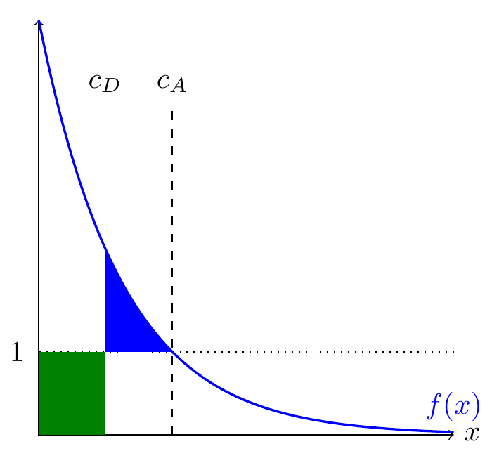
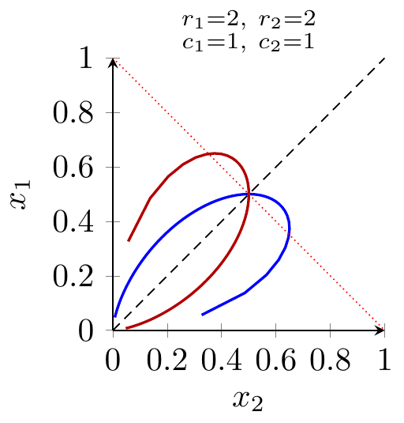
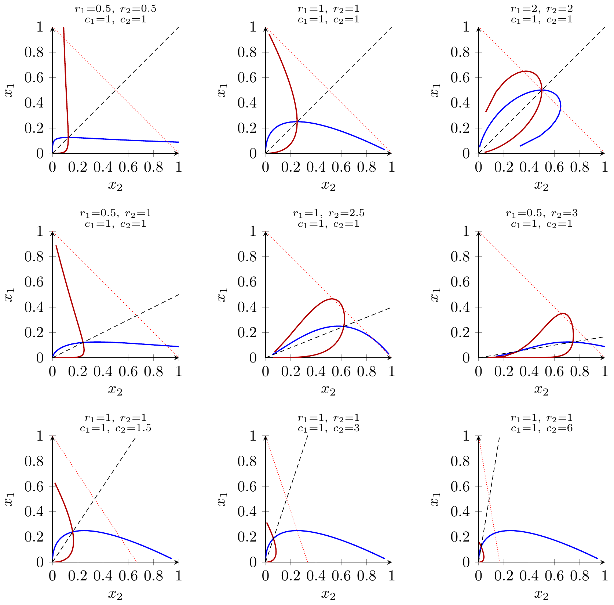
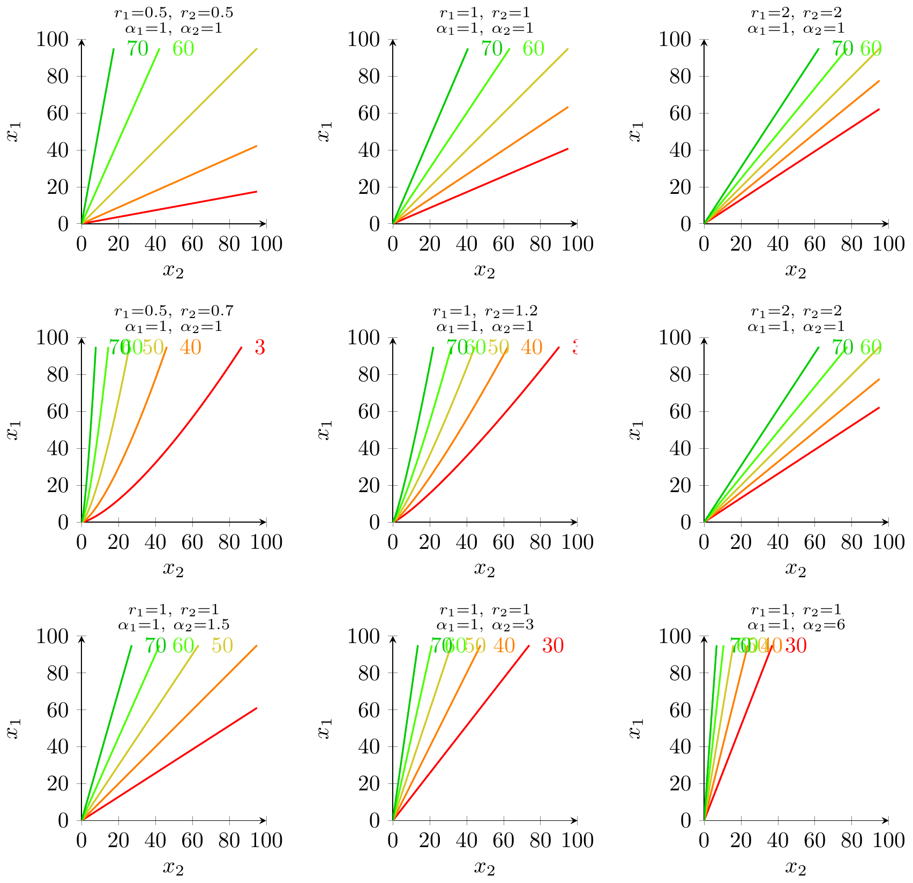

==TO DO: draw isovalue curves for various parameters==
- AI will change the balance of power across dozens of different areas.
-
AI is already being adopted by both sides in teaching, hiring, war, education, publication, communication.
In some cases it will shift things in favor of the offense, in some it will shift in favor of defense.
I describe four stylized models of the offense-defense balance.
Offense Defense AI favors finding holes plugging holes defense finding holes watching holes offense forging items verifying items defense forging items examining items offense - The theory will be very loose.
- By the standards of economic theory published in journals this blog post is going to be enormously loose. But it feels like a sufficiently important question that it’s worth taking a picture even if it’s blurry.
- Offense as finding holes.
-
Suppose offense and defense are both exerting effort to find holes. If offense finds a hole that’s not defended, then it wins the game. Two subgames:
Defense plugs holes. When defense finds a hole then it can fix it, putting a plug in it. If offense finds a hole, and it’s not fixed, then it wins a point. If AI makes it easier for both sides to find holes, and assuming the return to effort on finding holes is decreasing, this will favor the defender, because we eventually run out of holes.
Defense watches holes. When defense finds a hold then it can watch that hole, but they have limited attention. Now if both sides get better at finding holes the advantage will be to the attacker (assuming the defender has diminishing ability to watch more holes).
- Offense as forging items.
-
Suppose offense chooses some X and the defender examines it to see if it’s genuine. Both sides have access to a classifier that can give an imperfect signal of whether X is genuine.
Defense verifies items. Suppose defense can freely verify the quality of the item. As the classifier gets better this will tend to favor the defense because we know a perfect classifier must perfectly favor the defense.
Defense examines items. The offense chooses some X and the defender examines it to see whether it appears genuine. In this case the appearance of X isn’t the ground truth, the property depends on some external fact about the world. In this case a perfect classifier helps the offense because they can then pass their forgeries off perfectly.
Applications
| AI helps offense | AI helps defense | Guess at benefit | |
|---|---|---|---|
| WARFARE | |||
| - assassination | autonomous assassination drones | autonomous anti-drone drones | offense |
| - battle robots | autonomous attack robots | autonomous defense robots | ? |
| - camouflage | AI signal disruption | AI signal detection | defense |
| COMPUTER SECURITY | |||
| - compromise a server | AI fuzzing | AI defensive fuzzing | defense |
| - vulnerabilities in OSS | AI code checking | AI defensive code checking | defense |
| - spear phishing | AI forgery of phishing emails | AI phishing detector | offense |
| EDUCATION | |||
| - cheating on problemsets | AI answers the question for you | (none) | offense |
| - cheating on essays | AI writes the essay | AI detector | offense |
| RESEARCH | |||
| - forging historical documents | produce an image that looks authentic | recognize whether it’s a forgery | offense |
| - faking data in research | AI generates fake data | AI detects faked data | offense |
| CONTENT MODERATION | |||
| - email spam with link | AI customized spam | offense | |
| - policy-violating content | AI obsfucation | AI detection | defense |
| - censoring communication | AI obsfucation | AI detection | defense |
| - forgery/deepfakes | AI | offense | |
| - watermarking | AI watermarking | AI watermark removal | |
| WORK | |||
| - leaking information | AI to obscure activity | AI identifying activity | defense |
| - monitoring productivity | AI to obscure activity | AI identifying activity | defense |
| TRADE | |||
| - quality check | compromise on product quality | inspect quality |
Theory points:
- If finding holes –> favors defense.
- If covering surface, & costly –> favors defense (but killer drones).
- If forging –> favors
- If technology changes quickly — favors offense.
Model
- The attacker wins if they discover a hole that defense hasn’t discovered.
- The two sides spend \(c_A\) and \(c_D\) on searching for holes, and there’s a density of holes \(f(x)\), so the probability of the attacker winning is: \[\utt{F(c_A)-F(c_D)}{prob attacker finds}{a hole that defender does not}\]
- There’s no pure strategy equilibrium.
- If the attacker ever wins, we must have some occasions when \(F(c_A)>F(c_D)\). But they face the same marginal cost, and attacker has lower marginal benefit (bcos \(c_A>c_D\)), which is a contradiction. [==fix this==]
- Conjecture at a mixed-strategy equilibrium.
- Defense plays a fixed \(c_D\). The attacker is indifferent between playing 0 and playing \(c_A\) which satisfies: \[\begin{aligned} \utt{f(c_A)}{marginal return}{to effort} &= \utt{1}{marginal}{cost} \\ \utt{F(c_A)-F(c_D)}{benefit}{from participating} &= \utt{c_A}{cost from}{participating} \\ \end{aligned} \]
- How does distribution \(f\) affect equilibrium?
-
- \(c_A=f^{-1}(1)\) , so if fat tails then attackers will put in a lot of effort, if thin tails then not so much.
Will be equilibrium when the blue and green are exactly the same size:
General Theory on Offense-Defense
- Lanchester (1915) Lanchester Laws
- General laws of ratio required by offense and defense in a battle.
- Huntington (1958) “Arms Races”
- (…)
- Tullock contest functions.
- Typically symmetric. The share of surplus consumed will be inverse to steepness of diminishing returns.
- Schneier (2018) “Artificial Intelligence and the Attack/Defense Balance”
-
“Both attack and defense will benefit from AI technologies, but I believe that AI has the capability to tip the scales more toward defense. … defense is currently in a worse position than offense precisely because of the human components. Present-day attacks pit the relative advantages of computers and humans against the relative weaknesses of computers and humans. Computers moving into what are traditionally human areas will rebalance that equation.”
- Glaser & Kaufman (1998) What Is the Offense-Defense Balance and How Can We Measure It?
-
They say it’s been an influential theory, and says that war is rare today because technology favors defense over offense.
“As originally described by Robert Jervis, the two key variables in the theory are (1) the offense-defense balance – whether it is”easier” to take territory or to defend it, and (2) offense-defense distinguishability – whether the forces that support offensive missions are different from those that support defensive missions. The basic predictions concerning the offense-defense balance are that as the advantage of offense increases, the security dilemma becomes more severe, arms races become more intense, and war becomes more likely”
Definition of the balance:
“ratio of forces the attacker requires to take territory to the cost of the forces the defender has deployed.”
- Garfinkel & Dafoe (2019) “How does the offense-defense balance scale?”
-
They conjecture that in many cases growth in resources will favor defense:
“growth in investments will favor offense when investment levels are sufficiently low and favor defense when they are sufficiently high.”
- Bonfanti (2022) Artificial intelligence and the offense-defense balance in cyber security
- General discussion, “It is difficult to establish which application, defensive or offensive, will benefit relatively more from the integration of AI capabilities.”
- Maxwell Tabarrok (2024) “A Theory of Equilibrium in the Offense-Defense Balance”
- Just says that there will be effects of AI on both defense as well as offense, so you shouldn’t expect partial equilibrium effects of offensive AI to be the full effect. E.g. if there are killer drones then people will go outside less. (also on lesswrong)
- Heather Adkins (2024) “The Offense-Defense Balance”
-
She says that vulnerability discovery is increasing, & that’s probably driven by LLMs, but it’s unclear whether this is changing the offense-defense balance.
“Are we going to find vulnerabilities faster on the defense side or the offense side? And then how quickly can we fix them? And that, I think, ultimately is just to make a very complicated conversation very simple, that’s the linchpin in this question. Who’s going to win is going to be who runs faster at the software vulnerability problem, in my view.”
“by 2050, I do think we will have systems that are relatively self healing.”
- Bressler, Trager, Dafoe (2021) The Offense-Defense Balance and the Costs of Anarchy: When Welfare Improves Under Offensive Advantage
-
Notes that welfare is generally better when there’s a big asymmetry, as there’s less equilibrium conflict.
“High defensive advantage is first-best because attacking is difficult and the arms burdens required to deter attacks and maintain peace are low. High offensive advantage is comparatively worse because war is likely, but war tends to be smaller in scale, quicker, and less costly. Intermediate offensive advantage is worst because high arms burdens are required to deter attacks while wars, when they occur, are larger, longer, and more destructive.”
- Jabarian & Imas (2025) “Artificial Writing & Automated Detection”
- They evaluate the tradeoff of FNR and FPR among different artificial writing programs, but I think do not consider the equilibrium effects.
- (garfinkel2007conflict?)
- Good review of the economics of conflict, centered around the Tullock contest function.
General Tullock
Let \(e_1,e_2\ge 0\) be the effort choices of the two players, and we have general payoff function:
\[P_1(e_1,e_2)\]
Simplest properties of CSF: (1) diminishing returns; (2) homogenous; (3) positive cross-partial (& so strategic complements).
Suppose player 1 gets a multiplicative boost, then:
- If you hold effort fixed then player 1 gets a higher share of winnings.
- Player 1 effort falls. If \(\frac{P_1}{de_1}\propto\frac{1}{e_1}\) then player 1’s effort would be unchanged, but we expect marginal returns will fall faster than \(1/x\), because it’s bounded above.
- Player 2 effort rises. Because of strategic complements.
Tullock
Let \(e_1,e_2\ge 0\) be the effort choices of the two players, and let \(c_1,c_2>0\) be their marginal costs of effort.
Contest success function. Player 1 wins the prize with probability \[P_1(e_1,e_2)=\frac{e_1^{r_1}}{e_1^{r_1}+e_2^{r_2}}\] and player 2 wins with \(P_2(e_1,e_2)=1-P_1(e_1,e_2)\).
Payoffs. Let the prize be worth \(V>0\) to both players. Then player 1’s payoff is \[u_1(e_1,e_2)=V\,P_1(e_1,e_2)-c_1 e_1 = V\frac{e_1^{r_1}}{e_1^{r_1}+e_2^{r_2}}-c_1 e_1,\] and symmetrically for player 2: \[u_2(e_1,e_2)=V\frac{e_2^{r_2}}{e_1^{r_1}+e_2^{r_2}}-c_2 e_2.\]
First-order condition for player 1. Fix \(e_2\) and maximize \(u_1(e_1,e_2)\) over \(e_1\ge 0\).
- Differentiate \(P_1\) with respect to \(e_1\): \[\frac{\partial P_1}{\partial e_1} =\frac{r_1 e_1^{r_1-1} e_2^{r_2}}{\bigl(e_1^{r_1}+e_2^{r_2}\bigr)^2}.\]
- The derivative of \(u_1\) is therefore \[\frac{\partial u_1}{\partial e_1} =V\frac{r_1 e_1^{r_1-1} e_2^{r_2}}{\bigl(e_1^{r_1}+e_2^{r_2}\bigr)^2}-c_1.\]
- An interior best response \(e_1>0\) must satisfy the FOC \[V r_1 e_1^{r_1-1} e_2^{r_2} =c_1\bigl(e_1^{r_1}+e_2^{r_2}\bigr)^2. \tag{BR1-FOC}\]
Parametric best-response curve for player 1. It is convenient to re-express the FOC in terms of the ratio \[t \equiv \frac{e_1^{r_1}}{e_2^{r_2}}, \qquad t>0.\] We can solve for the pair \((e_1,e_2)\) that lies on player 1’s best-response locus.
- Rewrite the FOC using \(t\):
- Note that \(e_1^{r_1}=t e_2^{r_2}\) and hence \[e_1^{r_1-1} =\frac{e_1^{r_1}}{e_1} =\frac{t e_2^{r_2}}{e_1}.\]
- Using \(e_1=t^{1/r_1} e_2^{r_2/r_1}\) we get \[e_1^{r_1-1} =t^{(r_1-1)/r_1} e_2^{r_2(1-1/r_1)}.\]
- Substituting into (BR1-FOC) gives \[V r_1 t^{(r_1-1)/r_1} e_2^{r_2(2-1/r_1)} = c_1 e_2^{2r_2}(t+1)^2.\]
- Cancelling the common factor \(e_2^{r_2(2-1/r_1)}\) yields \[V r_1 t^{(r_1-1)/r_1} = c_1 e_2^{r_2/r_1}(t+1)^2.\]
- Solving this for \(e_2\) gives the opponent’s effort along player 1’s best-response locus: \[e_2(t) =\Biggl(\frac{V r_1}{c_1}\, \frac{t^{(r_1-1)/r_1}}{(1+t)^2}\Biggr)^{\!\!r_1/r_2}.\]
- Given \(e_2(t)\), player 1’s effort on the best-response curve is \[e_1(t) =t^{1/r_1}\, e_2(t)^{\,r_2/r_1} =\frac{V r_1}{c_1}\,\frac{t}{(1+t)^2}.\]
- Rewrite the FOC using \(t\):
Symmetry for player 2. The same derivation, swapping the indices, yields a parametric best-response curve \((e_2(s),e_1(s))\) for player 2, where \(s\equiv e_2^{r_2}/e_1^{r_1}\) plays the role of \(t\) above.
Global maximization vs. FOCs.
- For each fixed \(e_2\), the payoff \(u_1(e_1,e_2)\) is continuous on \([0,\infty)\) and differentiable for \(e_1>0\), with \(\frac{\partial u_1}{\partial e_1}\) given above.
- Any interior optimum must satisfy (BR1-FOC), but the converse need not hold in general: a solution of the FOC could in principle be a local minimum rather than a maximum.
- In the parameter ranges used in the figures (all \(r_i>0\), linear costs \(c_i e_i\), and \(V>0\)), the function \(u_1(e_1,e_2)\) is single-peaked in \(e_1\) for each fixed \(e_2\):
- As \(e_1\downarrow 0\) we have \(u_1(e_1,e_2)\to 0\) and \(\frac{\partial u_1}{\partial e_1}>0\).
- As \(e_1\uparrow\infty\) the cost term \(c_1 e_1\) dominates and \(u_1(e_1,e_2)\to -\infty\), while \(\frac{\partial u_1}{\partial e_1}<0\) for sufficiently large \(e_1\).
- Because the derivative changes sign only once, there is at most one interior critical point, and it must be a global maximum if it is positive; otherwise the unique best response is \(e_1^*(e_2)=0\).
- The TikZ code for the best-response diagrams is built from the parametric formulas \((e_1(t),e_2(t))\) and their symmetric counterparts, which select exactly this global-maximum branch. Any visually “two-valued” behavior in earlier drafts came from plotting all algebraic solutions of the FOC, not from multiple global maxima; the current version renders only the economically relevant best response.
For the symmetric benchmark with \(r_1=r_2=r\) and \(c_1=c_2=c\) this machinery reduces to the familiar expressions. For example, when \(r=1\) the scalar best-response function simplifies to \[e_1(e_2)=\max\{0,\sqrt{V e_2/c}-e_2\},\] and the symmetric equilibrium has \(e_1=e_2=V/(4c)\), with total dissipation \(e_1+e_2=V/2\).


https://link.springer.com/content/pdf/10.1007/s00199-021-01367-4.pdf
Miscellaneous
Allisat, A. “AI Arms Race: the evolving battle between email spam and spam filters.”
On the Societal Impact of Open Foundation Models – They talk about the “marginal risk”
Cullen O’Keefe (2025) Will AI Lawyers Make Swords or Shields?
“When I first thought of the possibility of AI Lawyers, my initial reaction was that AI lawyers will be overall good for the cause of justice. … As I thought about it more, though, I realized I was failing to consider how AI Lawyers might affect prosecution dynamics.”
Garfinkel and Dafoe (2019) “Artificial Intelligence, Foresight, and the Offense-Defense Balance”
Appendix
models
- Finding holes in a wall -> AI helps defense.
- Both sides are trying to find holes. Offense will randomize where it looks. If there are a finite number of holes then improved hole-finding will win.
- Guarding a perimeter -> AI helps defense.
- Each side chooses some points to cover on a surface. The attacker wins proportional to the uncovered points. It costs something to cover each point.
- Inspecting items for quality -> AI helps defense.
- You are delivering a cargo of 1000 things. The recipient randomly chooses a fraction for manual inspection. E.g. delivering wool to the auction.
- Inspecting items for certification -> AI helps offense.
- You are delivering a cargo of 1000 things. The recipient is checking for signs of authenticity, where authenticity is an external property.
- Nuclear bomb.
- Once you know how to create a nuclear bomb then you can threaten the world. Generally with CBRN.
Tullock isovalue curves
We keep the same basic Tullock contest setup as in the main text, but now focus on isovalue curves for the contest success function alone, ignoring costs.
Contest success function with asymmetry. Let \(e_1,e_2\ge 0\) be the effort choices of the two players, and let \(\alpha_1,\alpha_2>0\) capture multiplicative effectiveness (or “quality”) advantages. For exponents \(r_1,r_2>0\), player 1’s probability of winning the prize is
\[P_1(e_1,e_2) =\frac{\alpha_1 e_1^{r_1}}{\alpha_1 e_1^{r_1}+\alpha_2 e_2^{r_2}},\]
and player 2’s winning probability is \(P_2(e_1,e_2)=1-P_1(e_1,e_2)\).Isovalue definition. Fix some target success probability \(\bar p\in(0,1)\) for player 1. The isovalue locus for player 1 at level \(\bar p\) is the set of effort pairs \((e_1,e_2)\) such that
\[P_1(e_1,e_2)=\bar p.\]Solving explicitly for the isovalue curve. We solve \(P_1(e_1,e_2)=\bar p\) for \(e_1\) as a function of \(e_2\).
- Start from the definition:
\[\bar p =\frac{\alpha_1 e_1^{r_1}}{\alpha_1 e_1^{r_1}+\alpha_2 e_2^{r_2}}.\] - Multiply both sides by the denominator:
\[\bar p\bigl(\alpha_1 e_1^{r_1}+\alpha_2 e_2^{r_2}\bigr) =\alpha_1 e_1^{r_1}.\] - Expand the left-hand side:
\[\bar p\alpha_1 e_1^{r_1} +\bar p\alpha_2 e_2^{r_2} =\alpha_1 e_1^{r_1}.\] - Subtract \(\bar p\alpha_1 e_1^{r_1}\) from both sides to collect the \(e_1^{r_1}\) terms:
\[\bar p\alpha_2 e_2^{r_2} =\alpha_1 e_1^{r_1}-\bar p\alpha_1 e_1^{r_1} =\alpha_1(1-\bar p)e_1^{r_1}.\] - Solve for \(e_1^{r_1}\):
\[e_1^{r_1} =\frac{\bar p\alpha_2}{\alpha_1(1-\bar p)}\,e_2^{r_2}.\] - Take the \(r_1\)‑th root of both sides to get \(e_1\) as a function of \(e_2\):
\[e_1(e_2) =\Biggl(\frac{\bar p\alpha_2}{\alpha_1(1-\bar p)}\Biggr)^{\!1/r_1} e_2^{r_2/r_1}.\]
- Start from the definition:
Interpretation.
- For each fixed parameter tuple \((r_1,r_2,\alpha_1,\alpha_2,\bar p)\), the isovalue locus is a simple power function in the \((e_2,e_1)\)‑plane.
- Asymmetries in effectiveness \((\alpha_1,\alpha_2)\) change the vertical scale of the curve: if player 1 gets a larger \(\alpha_1\) (holding everything else fixed), then the constant factor in front of \(e_2^{r_2/r_1}\) shrinks, so player 1 can sustain the same winning probability \(\bar p\) with lower effort \(e_1\) for any given opponent effort \(e_2\).
- Asymmetries in exponents \((r_1,r_2)\) change the curvature of the isovalue curve via the exponent \(r_2/r_1\). When \(r_1=r_2\) the locus is a straight line through the origin; when \(r_2\ne r_1\) it becomes a nonlinear curve.
Scaling the axes. In the figures below we simply re‑label the horizontal axis as player 2’s effort \(x_2=e_2\) and the vertical axis as player 1’s effort \(x_1=e_1\), and truncate both axes to the interval \([0,100]\) to match the units used elsewhere in the post.
